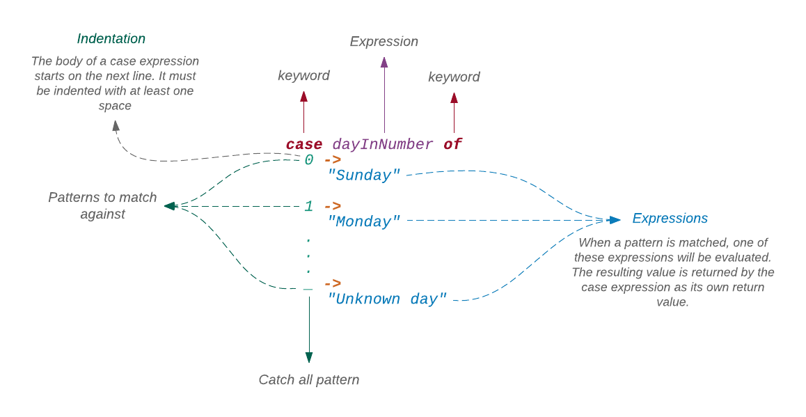
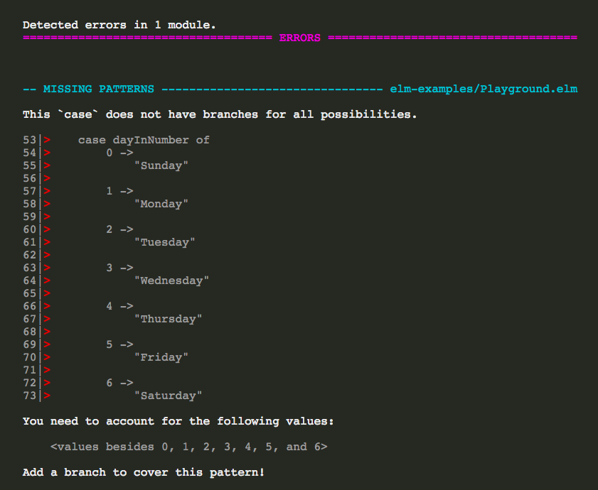
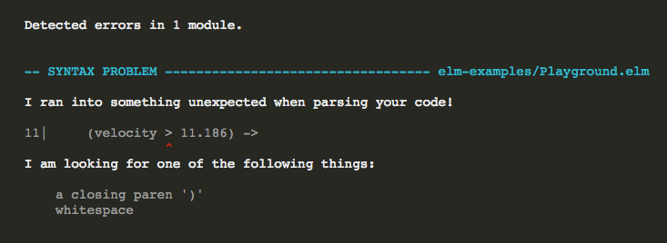

Řekněme, že máme dny v týdnu reprezentované číslicemi mezi 0 a 6 a chceme tato čísla přeměnit na řetězce (0 = Sunday, 1 = Monday, etc.). Můžeme k tomu použít výraz if. Zapište následující definici funkce nad funkci main v souboru Playground.elm.
weekday dayInNumber =
if dayInNumber == 0 then
"Sunday"
else if dayInNumber == 1 then
"Monday"
else if dayInNumber == 2 then
"Tuesday"
else if dayInNumber == 3 then
"Wednesday"
else if dayInNumber == 4 then
"Thursday"
else if dayInNumber == 5 then
"Friday"
else if dayInNumber == 6 then
"Saturday"
else
"Unknown day"
main =
...Nyní zobrazme "Friday" v prohlížeči použitím funkce weekday, volané funkcí main.
main =
weekday 5
|> Html.textObnovíte-li stránku na http://localhost:8000/elm-examples/Playground.elm, měli bychom vidět "Friday". Jak se věci mají právě teď, je funkce weekday poněkud předimenzovaná. Nevykonává nic víc než porovnávání čísel v každé podmínkové větvi. Lze to vyjádřit stručněji? Zkusme výraz case.
weekday dayInNumber =
case dayInNumber of
0 ->
"Sunday"
1 ->
"Monday"
2 ->
"Tuesday"
3 ->
"Wednesday"
4 ->
"Thursday"
5 ->
"Friday"
6 ->
"Saturday"
_ ->
"Unknown day"Oho! Mnohem lepší!
Syntaxe výrazu case

Výraz case provádí porovnávání výrazu se vzorem. Je-li nalezena shoda, vyhodnotí výraz na hodnotu vpravo od -> a vrací ji jako výstupní hodnotu.
- Pattern Matching
- Pattern matching je akt porovnávání jednoho či více vstupů s předefinovaným vzorem a hledání shody. Pattern matching budeme podrobněji zkoumat v kapitole 4.
Výraz za klíčovým slovem case může být cokoli od jednoduché hodnoty až ke složitému výpočtu včetně evokace funkce. Chceme-li například generovat "hashtag" pro každý den týdnu, můžeme napsat další funkci, která přijme řetězec, vrácený funkcí weekday a porovná jej s hashtagem. Vložte následující definici funkce nad main.
hashtag dayInNumber =
case weekday dayInNumber of
"Sunday" ->
"#SinDay"
"Monday" ->
"#MondayBlues"
"Tuesday" ->
"#TakeMeBackTuesday"
"Wednesday" ->
"#HumpDay"
"Thursday" ->
"#ThrowbackThursday"
"Friday" ->
"#FlashbackFriday"
"Saturday" ->
"#Caturday"
_ ->
"#Whatever"
main =
...Nyní v main použijte funkci hashtag místo weekday.
main =
hashtag 5
|> Html.textObnovíte-li stránku na http://localhost:8000/elm-examples/Playground.elm, uvidíte “#FlashbackFriday”.
Můžete být při zápisu výrazu case v pokušení psát dvojice souvisících stringů do jednoho řádku, jako v následující ukázce:
hashtag dayInNumber =
case weekday dayInNumber of
"Sunday" -> "#SinDay"
"Monday" -> "#MondayBlues"
"Tuesday" -> "#TakeMeBackTuesday"
"Wednesday" -> "#HumpDay"
"Thursday" -> "#ThrowbackThursday"
"Friday" -> "#FlashbackFriday"
"Saturday" -> "#Caturday"
_ -> "#Whatever"Rukověť Style guide nám říká abychom to nedělali. I když je toto uspořádání jednodušší, ztěžuje případnou pozdější úpravu.
Odchycení všech vzorů
Povšimněte si použití dvou podtržítek _ u posledních vzorů. Bez nich by Elm vyvolal chybové hlášení. Pokračujte dál a odstraňte řádek, který obsahuje podtržítka _ z funkce weekday a obnovte stránku na http://localhost:8000/elm-examples/Playground.elm. Mělo by se zobrazit toto chybové hlášení:

Musíme se postarat o každou hodnotu, kterou výraz může mít. Protože funkce dayInNumber obsahuje integer, jehož interval je docela veliký, je ošetření každé jednotlivé možné hodnoty neproveditelné. Znak _ pracuje jako žolík (catch-all-pattern). Z toho důvodu umisťujeme nejvíce specifický vzor na první místo a nejméně specifický na konec. Kdybychom umístili znak _ na první místo, bude funkce weekday vždy vracet "Unknown day", bez ohledu na to, jaké číslo zadáme. Vraťte žolíka (_) zpět do funkce weekday.
Výraz IF versus CASE
Mohou být všechny výrazy if nahrazeny výrazy case? Nikoliv nezbytně. Výraz case pracuje vyhledáváním shody se vzorem, zatímco výraz if kontroluje, zda je podmínka pravdivá či nikoli. Následující kód například vůbec neobsahuje vzor.
escapeEarth velocity speed =
if velocity > 11.186 then
"Godspeed"
else if speed == 7.67 then
"Stay in orbit"
else
"Come back"Pokusíme-li se jej přepsat s výrazem case, dostaneme chybové hlášení.
Doplňte následující definici funkce nad main v Playground.elm.
escapeEarthWithCase velocity speed =
case (velocity, speed) of
(velocity > 11.186) ->
"Godspeed"
(speed == 7.67) ->
"Stay in orbit"
_ ->
"Come back"
main
...Po obnovení stránky na http://localhost:8000/elm-examples/Playground.elm, by mělo byt vidět následující chybové hlášení.

Důvodem tohoto hlášení je to, že není uveden žádný vzor k porovnání. Všechno co máme, je několik nesouvisejících podmínek. Navíc, část před znakem -> musí být vzor, nemůže to být výraz. My se zde pokoušíme porovnat danou velocity a speed s nějakým číslem s použitím výrazu.
Ovšem, když se pokoušíme zjistit, na které oběžné dráze může naše vesmírná loď zaparkovat, můžeme pro to použít výraz case. Doplňte následující definici funkce přímo nad main v souboru Playground.elm.
whereToPark speed =
case speed of
7.67 ->
"Low Earth Orbit"
3.8 ->
"Medium Earth Orbit"
3.07 ->
"Geostationary Orbit"
_ ->
"Nowhere"
main =
...Nyní v main volejme funkci whereToPark.
main =
whereToPark 7.67
|> Html.textOdeberte definici funkce escapeEarthWithCase ze souboru Playground.elm a obnovte stránku na http://localhost:8000/elm-examples/Playground.elm. Mělo by se zobrazit "Low Earth Orbit".
Shrnutí: máme-li k ověření různorodé podmínky, je výraz if dobrou volbou avšak pokud potřebujeme porovnat výraz se vzorem, potom je výraz case lepší volbou.